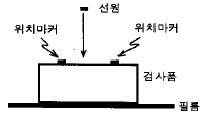
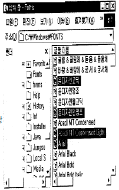
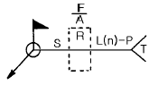

방사선비파괴검사산업기사(구) (2003-03-16 기출문제)
1과목: 방사선투과검사 시험
1. 반도체 스트레인 게이지(Strain gauge)의 장점이 아닌 것은?
- 게이지율이 높다.
- 소형이고 고저항이다.
- 높은 피로수명을 갖고 있다.
- 온도특성이 저항선에 비하여 크다.
(정답률: 알수없음)

2. 방사선투과사진을 보면 카세트의 뒷면 상이 시험체의 상에 겹친 것을 볼 수 있는데 이것은 무엇 때문인가?
- 과노출
- 언더컷
- 후방산란
- 강도가 높은 X선
(정답률: 알수없음)
3. 강판 검사체(두께 30mm)를 선원과 필름의 종류에 따라 조합하여 촬영하는 경우 투과도계 식별최소 선지름를 만족 시키지 못할 우려가 있는 조합은?
- X선 필름(후지#50)
- X선 필름(후지#100)
- Co60 필름(후지#100)
- Ir192 필름(후지#100)
(정답률: 알수없음)
4. 방사선투과시험시 피폭과 관련하여 주의해야 할 사항을 열거한 것이다. 잘못된 것은?
- 피폭을 줄이기 위해 차폐물을 설치한다.
- 체내피폭을 방지하기 위해 면마스크를 사용한다.
- 피폭량을 측정하기 위해 포켓도시메터를 휴대한다.
- 주변의 선량률을 측정하기 위해 서베이메터를 휴대 한다.
(정답률: 알수없음)
5. 보통 초음파탐상시험에서 결함을 검출하기 위해 측정하는 것은?
- 초음파의 파장
- 초음파의 음속
- 초음파의 반사강도
- 초음파의 주파수
(정답률: 알수없음)
6. 방사선 투과사진의 품질수준이 2-1T라 하면 투과도계의 1T 구멍을 확인할 수 있어야 한다. 이 때 방사선 투과사진의 감도는 몇 %에 해당되는가?
- 0.7%
- 1.0%
- 1.4%
- 2.0%
(정답률: 알수없음)
7. 방사선투과시험시 방사선 피폭량을 줄이기 위한 방법으로 가장 효과적인 것은?
- 방사선 방호를 위하여 약한 선량으로 작업한다.
- 서베이메타로 방사선량을 측정하고 작업한다.
- TLD 뱃지와 포켓도시메타를 착용하고 작업한다.
- 시간, 거리, 차폐의 원리를 활용하여 작업에 임한다.
(정답률: 알수없음)
8. 200kVP X선관에서 전자가 표적에 부딛쳐 X선이 발생할 때 전자가 X선으로 전환하는 율(%)은? (단, 표적은 텅스텐이며, 전환율 e = 1.1 x 10-9ZV로 나타내고, 이 때의 Z는 원자번호, V는 관전압이다.)
- 1.0%
- 1.6%
- 2.0%
- 2.5%
(정답률: 알수없음)
9. 방사선투과시험에서 필름농도의 정의는? (단, Lo : 입사광의 광도, L : 투과광의 광도)
- 필름농도 = log10(Lo / L)
- 필름농도 = log10(L - Lo)
- 필름농도 = log10(Lo × L)
- 필름농도 = log10(Lo + L)
(정답률: 알수없음)
10. 방사성 동위원소의 비방사능에 대한 설명으로 틀린 것은?
- 단위 질량 당 방사능의 양
- 비방사능이 높으면 임의 강도의 선원의 크기가 작아진다.
- 비방사능이 높으면 자기흡수가 작아진다.
- 비방사능이 높으면 반감기가 길어진다.
(정답률: 알수없음)
11. 관전류 및 관전압의 변화에 따라 발생되는 X선의 파장에 관한 설명으로 옳지 않은 것은?
- 관전압을 상승시켜도 특성 X선의 파장은 변하지 않는 다.
- 관전류을 증가시켜도 특성 X선의 파장은 변하지 않는 다.
- 관전압을 상승시켜도 연속 X선의 최단파장은 변하지 않는다.
- 관전류을 증가시켜도 연속 X선의 최단파장은 변하지 않는다.
(정답률: 알수없음)
12. 강으로 주조된 밸브내에 끼운 나일론제 링(ring)이 원래 상태대로 있는가를 검사하기 위한 방법으로 가장 좋은 것은?
- X-선 투과시험
- γ-선 투과시험
- 전자선 투과시험
- 중성자 투과시험
(정답률: 알수없음)
13. 방사선 투과사진의 농도가 2.82 이면 농도계에서 투과광의 강도는 입사광 강도의 몇 배인가?
- 약 0.0015배
- 약 0.017배
- 약 2.8배
- 약 17배
(정답률: 알수없음)
14. 다음 입자가속기중 자장에 의하여 전자가 가속되는 것은?
- 선형가속기
- 반데그라프형
- 베타트론
- 공진 변압기형
(정답률: 알수없음)
15. 와전류는 전도체의 어느 것에 의해 유도되는가?
- 연속직류
- 감마선
- 교번자속
- 압전력
(정답률: 알수없음)
16. 점상 감마선원으로부터 방출되는 방사선의 강도 변화에 대한 설명 중 맞는 것은?
- 시험체 두께에 비례하여 선형적으로 감소한다.
- 시험체 두께에 반비례하여 감소한다.
- 선원으로부터 거리의 제곱에 반비례하여 감소한다.
- 선원으로부터 거리에 반비례하여 감소한다.
(정답률: 알수없음)
17. 다음 중 방사선투과사진의 현상과정에서 발생된 인공결함이 아닌 것은?
- 줄무늬(streak)
- 검은 반점(Black spotting)
- 흰 반점(White spotting)
- 구겨짐표시(crimp mark)
(정답률: 알수없음)
18. 다음 중 비파괴검사시 모서리 효과(Edge effect)와 표피효과(Skin effect)가 나타나는 검사법은?
- 누설검사법
- 침투탐상시험법
- 와전류탐상시험법
- 방사선투과시험법
(정답률: 알수없음)
19. 전자파 방사선이 물질을 투과할 때 산란 방사선이 발생한다. 이 산란 방사선의 파장을 일차 방사선과 비교할 때 맞는 것은?
- 일차방사선 보다 짧다.
- 일차방사선 보다 길다.
- 일차방사선과 동일하다.
- 물질에 따라 일차 방사선보다 짧을 수도, 길 수도 있다.
(정답률: 알수없음)
20. 방사선투과 촬영시 다음 중 선명도와 콘트라스트에 모두 영향을 미치는 것은?
- 피사체 콘트라스트
- 필름의 입상성
- 산란방사선
- 필름 콘트라스트
(정답률: 알수없음)
2과목: 방사선투과검사 시험
21. 방사선투과시험시 용접의 루트 패스(root pass)에서 주로 발생하고 영상이 검게 나타나는 결함들은?
- Slag inclusion, porosity
- Hollow bead, concavity
- Undercut, Burn-through
- Overlap, spatter
(정답률: 알수없음)
22. 공업용 X선 발생장치의 X선관 튜브의 창에 사용되는 필터의 역할은?
- 연질방사선을 만들어 주기위해 파장이 짧은 방사선을 걸러준다.
- 보다 균일한 엑스선을 만들기 위해 연질 방사선을 걸러준다.
- 엑스선의 강도를 변형 시킬수 있는 방법을 제공한다.
- 2차방사선을 증가시켜 엑스선의 강도를 증대시킨다.
(정답률: 알수없음)
23. 방사선투과 촬영시 납스크린의 효과로서 틀린 것은?
- 산란방사선을 증대시킨다.
- 사진의 콘트라스트를 증가시킨다.
- 필름의 사진작용을 증대시킨다.
- 1차방사선에 비해 파장이 긴 산란방사선을 흡수한다.
(정답률: 알수없음)
24. 수소를 포함한 미세 물질이, 비교적 두꺼운 강 또는 알루미늄 시험체에 포함되어 있는 경우 이 미세 물질을 검출하기에 적당한 방사선투과검사 방법은?
- 중성자 투과검사법
- 고에너지 X선 투과검사법
- 감마선 투과검사법
- 알파선 투과검사법
(정답률: 알수없음)
25. 필름 콘트라스트(film contrast)에 영향을 주는 인자가 아닌 것은?
- 현상조건
- 필름의 종류
- 농도
- 산란선
(정답률: 알수없음)
26. 다음 방사성 동위원소 중 가장 높은 에너지의 감마선을 방출하는 것은?
- Co-60
- Cs - 137
- Ir - 192
- Tm - 170
(정답률: 알수없음)
27. γ선 투과검사시 투과사진의 산란선의 작용을 감소시키는 것이 아닌 것은?
- 격자(Grid)
- 마스크(Mask)
- 연박증감지(Lead foil screen)
- 핀홀 카메라(Pin hole camera)
(정답률: 알수없음)
28. 필름을 필름홀더에 넣거나 뺄 때 거칠게 취급해서 발생할 수 있는 인위적 결함의 종류로 가장 적절한 것은?
- 필름 긁힘, 뿌염(안개) 현상
- 줄무늬 현상, 뿌염(안개) 현상
- 필름 긁힘, 정전기 표시
- 정전기 표시, 줄무늬 현상
(정답률: 알수없음)
29. 강용접부를 촬영한 결과 필름내 용접선에 흰 반점과 같은 것이 나타났다. 어떤 결함으로 간주하는 것이 제일 타당한가?
- 기공
- 슬래그혼입
- 텅스텐혼입
- 핏트(pit)
(정답률: 알수없음)
30. 중성자투과시험 중 직접법에 사용되는 변환자(Converter foil)의 재질은?
- 텅스텐
- 카드뮴
- 납
- 산화아연
(정답률: 알수없음)
31. 노출도표를 작성할 때 고정시켜야 할 인자가 아닌 것은?
- 현상조건
- 사진농도
- 사용필름
- 노출시간
(정답률: 알수없음)
32. 자기 정류회로의 X선 발생장치에서 역전압 저감회로의 접속 위치 또는 방법으로 맞는 것은?
- 고압변압기의 1차측
- 관전류 측정회로와 직렬
- 고압변압기의 2차측
- 관전압 측정회로와 병렬
(정답률: 알수없음)
33. X선 관전압 500kV이하의 X선을 이용하여 방사선투과검사 할 경우 양면 코팅된 X선 필름을 사용하더라도 필름에 도달한 투과 X선 에너지의 적은 비율만이 감광제에 작용하므로 사진작용을 증대시킬 필요가 있다. 이 때 X선 필름의 사진작용을 증대시키기 위해 사용되는 증감스크린으로 적합한 재질은?
- 납(Pb)
- 마그네슘(Mg)
- 구리(Cu)
- 알루미늄(Al)
(정답률: 알수없음)
34. 붕괴상수가 9.24x10-3/일 인 어떤 방사성 동위원소로 촬영 하여 농도 2.5의 양질의 사진을 얻을 때 같은 조건에서 5개월후 이 선원을 가지고 촬영하여 동일한 결과를 얻자면 노출 시간은?
- 전의 2배로 한다.
- 전의 3배로 한다.
- 전의 4배로 한다.
- 전의 5배로 한다.
(정답률: 알수없음)
35. 필름특성곡선에 있어서 다른 조건은 변하지 않고 현상시간만 증가되었다면 어떻게 되겠는가?
- 명암도가 증가하고 속도도 증가한다.
- 명암도가 증가하고 속도는 감소한다.
- 명암도가 감소하고 속도는 증가한다.
- 명암도가 감소하고 속도도 감소한다.
(정답률: 알수없음)
36. 방사선투과시험용 동위원소로 현재 사용하지 않는 것은?
- U-238
- Co-60
- Yb-169
- Ir-192
(정답률: 알수없음)
37. 다음 중 이차 방사선이라 볼 수 없는 것은?
- 광전자
- 열전자
- 컴프턴 전자
- 산란 광자
(정답률: 알수없음)
38. 그림과 같이 촬영 배치되었을 때 위치마커의 간격이 촬영 후 필름상에서 1.2배 커졌다면 이 시험편의 두께는 얼마인가 ?(단, 선원과 시험편사이의 거리는 500mm, 선원은 점선원으로 간주함)

- 125mm
- 100mm
- 50mm
- 70mm
(정답률: 알수없음)
39. 스텐레스강의 용접부에서 나타나는 회절상(mottling)의 형태는 대체로 어떻게 나타나는가?
- 균열과 유사한 모양
- 흰 원형 모양
- 검은 반점 모양
- 용입부족과 유사한 모양
(정답률: 알수없음)
40. 평판 맞대기 용접부에 대해 방사선투과검사를 하려 한다. 다음 중 투과도계(상질계)의 위치와 촬영방법이 올바른 것은?
- 필름쪽 검사체 면에 투과도계를 위치시키고, 이중벽투과, 이중상 촬영을 한다.
- 필름쪽 검사체 면에 투과도계를 위치시키고, 이중벽투과, 단상 촬영을 한다.
- 선원쪽 검사체 면에 투과도계를 위치시키고, 단벽 투과, 단상 촬영을 한다.
- 선원쪽 검사체 면에 투과도계를 위치시키고, 단벽 투과, 이중상 촬영을 한다.
(정답률: 알수없음)
3과목: 방사선안전관리, 관련규격 및 컴퓨터활용
41. 540mrad는 S.I 단위로 몇 mGy가 되는가?
- 6.8mGy
- 54mGy
- 5.4mGy
- 68mGy
(정답률: 알수없음)
42. 전 세계 인터넷 사용자 및 서비스 제공업체들이 각 분야별로 공지 사항 및 최신 정보나 뉴스를 게시, 검색할 수있게 해주는 서비스는?
- Gopher
- WWW(World Wide Web)
- WAIS
- USENET
(정답률: 알수없음)
43. 웹서비스에서 제공되는 여러 가지 자원들에 대한 주소를 나타내는 것은?
- HTTP
- URL
- HTML
- XML
(정답률: 알수없음)
44. 다음은 PC의 소프트웨어에 대한 내용이다. 이 중 틀린 것은?
- 하드웨어가 컴퓨터 시스템의 물리적인 측면을 나타내는데 비해 소프트웨어는 논리적인 동작을 나타 낸다.
- 소프트웨어는 흔히 프로그램이라고 하며, 이러한 프로그램은 방송이나 음악회의 프로그램처럼 작업의 진행 순서를 논리적으로 나열한 것이다.
- 프로그램에서 사용되는 명령어는 C언어, Visual Basic 언어 등의 프로그래밍 언어의 문법에 따라 작성되어야 하는데, 이렇게 컴퓨터 명령어를 이용하여 프로그램을 작성하는 일을 프로그래밍이라고 한다.
- 소프트웨어중의 시스템 소프트웨어는 특정 목적을 위해 작성한 프로그램으로 워드 프로세서, 웹 브라우저가 대표적인 예이다.
(정답률: 알수없음)
45. 방사능 오염물이 다량 함유된 채소를 섭취한 경우 발생하는 내부 피폭을 측정하기 위한 가장 좋은 선량계는?
- 포켓도시미터
- 서베이미터
- 홀바디카운터
- BF3 카운터
(정답률: 알수없음)
46. ASME Sec.V, Art.2에 따라 촬영을 할 때 한개 이상의 투과도계를 사용해야 하는 경우는?
- 필름내의 농도 변화가 투과도계 농도를 기준으로-10% 또는 +30% 이상일 경우
- 필름내의 농도 변화가 투과도계 농도를 기준으로-15% 또는 +30% 이상일 경우
- 필름내의 농도 변화가 투과도계 농도를 기준으로-15% 또는 +25% 이상일 경우
- 필름내의 농도 변화가 투과도계 농도를 기준으로-10% 또는 +25% 이상일 경우
(정답률: 알수없음)
47. ASME 규격에 의하여 흑화도계로 방사선 투과사진의 흑화도를 측정할 경우 교정된 필름(Film Strip)과의 허용오차는 얼마까지 인정하는가?
- 0.01 H&D
- 0.02 H&D
- 0.⑤ H&D
- 0.1 H&D
(정답률: 알수없음)
48. KS D 0242에 의한 등급 분류시 4급이 되는 경우는?
- 결함의 크기가 모재 두께의 1/4을 초과할 경우
- 결함의 크기가 8mm를 초과하는 경우
- 결함의 크기가 모재 두께의 2/3를 초과할 경우
- 5mm를 초과하는 용입불량이 있을 경우
(정답률: 알수없음)
49. 1-1T의 품질등급에서 1T 구멍이 식별되었을 때, ASTM E1025에 따르면 투과도계 등가감도는 얼마인가?
- 0.7%
- 1.0%
- 1.4%
- 2.0%
(정답률: 알수없음)
50. 다음 중 같은 종류의 단위끼리 짝지워진 것은?
- R : Bq
- Gy : J/㎏
- rem : Sv/h
- rad/h : C/㎏
(정답률: 알수없음)
51. KS D 0242에서 용접부 두께를 실제로 측정하기 어려운 경우에 양면에 덧살이 있는 재료두께 15mm인 시험체에 적용 가능한 계조계는?
- D4
- D1
- E4
- G4
(정답률: 알수없음)
52. 수시 출입자의 각 신체 부위에 대한 연간 등가선량한도가 옳게 연결된 것은?
- 피부 - 150mSv
- 손 - 100mSv
- 발 - 50mSv
- 수정체 - 30mSv
(정답률: 알수없음)
53. KS D 0227에서 정한 시험 시야의 형태는?
- 정사각형
- 직사각형
- 원형
- 타원형
(정답률: 알수없음)
54. KS B 0845에서 모재의 두께에 따른 투과도계의 식별 최소선지름으로 맞는 것은? (단, 상질은 A급으로 한다.)
- 4.0mm 이하 : 0.14㎜
- 4.0mm 초과 5.0mm 이하 : 0.16㎜
- 5.0㎜ 초과 6.3mm 이하 : 0.20mm
- 6.3㎜ 초과 8.0mm 이하 : 0.25mm
(정답률: 알수없음)
55. ASME code의 투과도계 1T, 2T, 4T에서 T는 무엇을 의미하는가?
- 시험편의 두께
- 투과도계의 두께
- 노출두께
- 시험시야의 두께
(정답률: 알수없음)
56. KS B 0845에서 흠의 종별에 포함되어 있지 않는 것은?
- 텅스텐
- 파이프
- 언더컷
- 갈라짐
(정답률: 알수없음)
57. 컴퓨터에서 정중하고 교양있는 네트워킹 통신과 행동을 무엇이라 하는가?
- emoticon
- netizen
- etiquette
- Netiquette
(정답률: 알수없음)
58. 원자력법에서 정하는 방사선의 운반종사자에 대한 년간 유효선량한도는?
- 1밀리시버트(mSv)
- 12밀리시버트(mSv)
- 50밀리시버트(mSv)
- 100밀리시버트(mSv)
(정답률: 알수없음)
59. 다음 중 방사선량을 측정해야 하는 장소가 아닌 곳은?
- 사용시설
- 배수구
- 저장시설
- 방사선관리구역
(정답률: 알수없음)
60. 그림과 같이 서로 떨어져 있는 여러 개의 파일(검정 바)을 선택하는 방법은?

- 해당 파일을 마우스로 클릭한다.
- 툰키를 누른 채 해당 파일을 마우스로 클릭한다.
- 툼키를 누른 채 해당 파일을 마우스로 클릭한다.
- 툴키를 누른 채 해당 파일을 마우스로 클릭한다.
(정답률: 알수없음)
4과목: 금속재료 및 용접일반
61. 금속을 냉간가공하면 결정입자가 미세화 되어 재료가 단단해 지는 현상은?
- 가공경화
- 취성파괴
- 시효경화
- 표면경화
(정답률: 알수없음)
62. 재결정온도가 약 1000℃에 해당되는 금속은?
- Cu
- W
- Sn
- Ni
(정답률: 알수없음)
63. AW 300인 교류 아크용접기의 정격 사용률이 40%일 때, 이 용접기의 정격 사용률에 대한 설명으로 올바른 것은?
- 300[A]의 전류로 용접했을 때 10분 중 6분만 용접하고, 4분을 쉰다는 뜻이다.
- 300[A]의 전류로 용접했을 때 10분 중 4분만 용접하고, 6분을 쉰다는 뜻이다.
- 120[A]의 전류로 용접했을 때 10분 중 6분만 용접하고, 4분을 쉰다는 뜻이다.
- 120[A]의 전류로 용접했을 때 10분 중 4분만 용접하고, 6분을 쉰다는 뜻이다.
(정답률: 알수없음)
64. 변형 전과 후의 위치가 어떠한 면을 경계로 하여 대칭이 되는 것과 같은 변형은?
- 슬립변형
- 탄성변형
- 연성변형
- 쌍정변형
(정답률: 알수없음)
65. 베어링용으로 사용되는 합금이 갖추어야 할 조건이 아닌것은?
- 소착에 대한 저항력이 커야한다.
- 내식성이 좋아야 한다.
- 표면이 취성과 연질이어야 한다.
- 내 하중성이 좋아야 한다.
(정답률: 알수없음)
66. 40㎜2의 단면적을 갖는 재료에 500㎏f의 최대하중이 작용 하였다면 이 재료의 인장강도(㎏f/㎜2)는?
- 10.0
- 12.5
- 15.0
- 16.5
(정답률: 알수없음)
67. 보기와 같은 용접기호의 표시법에 대한 설명으로 틀린 것은?

- F: 다듬질 방법의 기호
- A: 홈의 루트 간격치수
- S: 용접부의 단면치수 또는 강도
- n: 점 용접 등의 수
(정답률: 알수없음)
68. 연강판의 가스 용접시 모재 두께가 3mm 일 때, 다음 중 가장 알맞는 용접봉의 직경은?
- 1mm
- 1.5mm
- 2mm
- 4mm
(정답률: 알수없음)
69. 고강도 저합금강으로써 자동차용 탄소강판의 대용제품은?
- STS 합금
- HSLA합금
- WPC강
- FRM강
(정답률: 알수없음)
70. 다음 용접법 중 전기 저항 용접인 것은?
- 업셋 맞대기 용접
- 전자비임 용접
- 피복 아크 용접
- 탄산가스 용접
(정답률: 알수없음)
71. 청동용탕중에 0.⑤-0.5% 첨가함으로써 탈산작용과 용탕의 유동성 개선 및 강도, 경도, 내마모성, 탄성을 향상 시키는 원소는?
- Aℓ
- Si
- P
- Pb
(정답률: 알수없음)
72. 금속이나 합금 중 면심입방격자에 대한 설명이 옳은것은?
- 단위정내에 2개의 원자가 있다.
- 체심입방격자와 같은 조대한 구조를 가지고 있다.
- 원자충전인자는 0.68 이다.
- 대표적인 금속은 Cu, Aℓ , Ni 등이다.
(정답률: 알수없음)
73. 전기저항용접법인 점용접 조건의 3요소에 대하여 설명한 것 중 틀린 것은?
- 구리나 알루미늄과 같은 열전도도가 큰 재료는 낮은 전류를 사용한다
- 전류값이 너무 크면, 과열되어 용융금속이 밖으로 나오고, 표면이 오목하게 된다.
- 강판을 점용접할때 적정전류에 통전시간을 길게 한다
- 가압력이 적을 때는 접촉저항 분포가 불균일하다.
(정답률: 알수없음)
74. 용접봉의 용융속도를 나타내는 것으로 가장 적합한 것은?
- 단위 시간당 소비되는 용접봉의 길이 또는 무게
- 단위 시간당 소비되는 아크전압
- 단위 시간당 소비되는 아크전류
- 단위 시간당 진행되는 용접속도
(정답률: 알수없음)
75. Fe - C 상태도에서 철금속재료 분류시 강(steel) 의 탄소함유량은?
- 약 0.0001% 이하
- 약 0.0218∼2.11%
- 약 2.12∼6.67%
- 약 6.68% 이상
(정답률: 알수없음)
76. 잔류응력에 대한 설명으로 올바른 것은?
- 심각한 결함이 아니므로 커도 좋다.
- 제거를 위하여 용접 후 열처리가 필요하다.
- 저온에서 사용하는 구조물에서는 아무 영향이 없다.
- 국부적으로 일어나지 않으며 응력 부식에 관계 없다.
(정답률: 알수없음)
77. 다음 용접이음에서의 잔류 응력을 측정하는 방법 중 정량적 방법이 아닌 것은?
- 부식법
- 응력 이완법
- X 선법
- 광탄성에 의한 방법
(정답률: 알수없음)
78. 다음 중 플래시 용접의 장점이 아닌 것은?
- 용접 강도가 크다.
- 전력 소모가 적다.
- 업셋량이 크다.
- 모재 가열이 적다.
(정답률: 알수없음)
79. 6:4황동에 Fe를 1-2% 첨가한 구리합금은?
- 코로손
- 델타메탈
- 애드미럴티
- 인청동
(정답률: 알수없음)
80. 용접시공에서 본 용접하기 전에 가접할 때 일반적인 주의사항으로 틀린 것은?
- 본 용접과 같은 온도에서 예열한다.
- 본 용접자와 동등한 기량을 갖는 용접자로 하여금 가접하게 한다.
- 용접봉은 본 용접 작업할 때 사용하는 것보다 약간 굵은 것을 사용한다.
- 가접의 위치는 부품의 끝 모서리, 각 등과 같이 단면이 급변하여 응력이 집중되는 곳은 가능한 피한다.
(정답률: 알수없음)